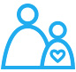
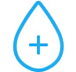

기관활동
business
모든 어린이의 생존과 발달
건강한 어린이는 건강한 성인으로 자라나 자신과 가족뿐 아니라 지역사회와 나라의 상황을 크게 개선할 수 있습니다. 유니세프는 기초 보건 서비스를 개선하고, 예방접종 실시 및 구강수분보충염 공급 등 보건 사업을 전개하며, 보건 정보 확산을 위해 캠페인을 함께 진행하여 어린이의 질병 예방과 건강 관리를 위해 노력하고 있습니다.
발달을 위한 주요성과
- 4,000만 명이 넘는 어린이에게
홍역 예방 접종 - 중증 영양실조에 걸린 어린이
500만 명치료 - 어린이 2,200만 명
HIV TEST 시행
모든 어린이의 교육
우리의 목표는 지속 가능한 발전 4항에 의거 전 세계 모든 어린이가 양질의 공평한 교육을 받도록 하는 것입니다. 초등교육 보편화에 대한 국제 사회의 노력에도 불구하고, 여전히 6~15세 1억 2,100명의 어린이가 적절한 교육을 받지 못합니다. 유니세프는 어린이가 교육을 받을 수 있도록 지원합니다. 아울러 지속 가능한 발전 5항인 “양성평등 달성 및 여성 역량 강화”를 위해 여자 어린이의 교육을 지원합니다.
교육을 위한 주요성과
- 학교에 다니지 못하는 어린이
1,700만 명에게 교육 서비스 제공 - 어린이 1,200만 명에게
교육용품 제공 - 어린이 및 청소년 400만 명에게
직업 훈련 서비스 제공
모든 어린이의 보호
전 세계에는 관심과 보호를 필요로 하는 어린이들이 많습니다. 전쟁이나 자연재해 등 긴급 상황으로 인해 보호가 필요한 어린이들, 위험한 노동으로 고통받고 있는 어린이들, 에이즈로 인하여 부모의 보호를 받지 못하는 어린이들, 아동 성 착취에 희생되고 있는 어린이들, 장애를 지니고 있어 차별받고 고통받는 어린이들, 그리고 범법 행위에 연루된 어린이들이 포함됩니다.
보호를 위한 주요성과
- 47개 나라 어린이
2,100만 명출생 등록 지원 - 76개나라 난민 어린이
170만 명에게 보호 서비스 제공 - 여성 할례로 부터 여자 어린이
16만 명보호
모든어린이의 안전하고 깨끗한 환경
노상 배변으로 인한 불량한 위생 상태와 더러운 식수로 인해 어린이들은 설사병과 전염병, 기생충으로 인한 질병의 위험에 노출되어 있습니다. 이는 어린이들의 성장에 큰 손실을 주며 발육부진의 원인이 됩니다. 유니세프의 지원 아래 많은 비정부기구들이 식수와 위생을 위하여 국제적인 노력을 하고 있습니다. 그 결과 2015년 약 52억 명의 사람들이 안전한 식수를 사용할 수 있게 되었고, 5세 미만 어린이들의 설사병으로 인한 사망을 줄일 수 있었습니다. 하지만 여전히 8억 4,400만 명의 사람들은 안전한 식수를 이용하지 못하고 있습니다.
안전하고 깨끗한 환경을 위한 주요성과
- 학교 8,026곳에 어린이
240 만명을위한기본 위생 시설 설치 - 1,830만 명에게
안전한 식수 제공 - 56개 나라에 아동친화적인
기후변화 정책 도입 촉구
모든 어린이의 공평한 기회
유니세프는 모든 어린이들의 기본적인 평등을 위해 불평등의 근본적인 원인들을 규명하고 제거하고자 노력하고 있습니다.유니세프는 사회 통합을 위해 모든 아이들이 자신의 권리를 깨닫고 실현할 수 있게 도우며, 가장 소외되고 차별 받는 어린이들을 돕습니다. 이를 통해 사회 통합 사업은 다른 여섯 개의 중점사업을 보완하는 역할을 합니다.
공평한 기회 보장을 위한 주요성과
- 장애 어린이170 만명에게
보조 장비 및 생활 물품 제공 - 97개 나라와 협력해
어린이 빈곤 상황 정책 개발 촉구 - 장애 어린이 170 만명에게
보조 장비 및 생활 물품 제공